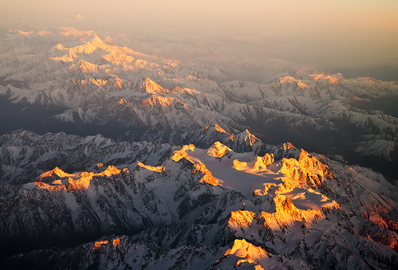
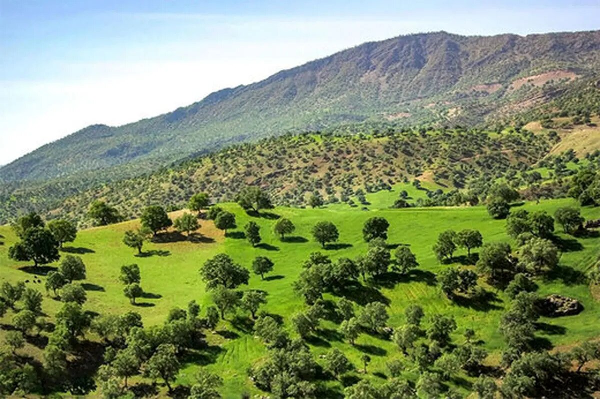

Home
About
News
Blog
Gallery
Contact
🇬🇧 EN
🇰🇷 سۆرانی
🇰🇷 Kurmancî
Photo Gallery
Explore the beauty and resilience of the Kurdish Highlands through our lens.

Zagros Mountains at Sunrise

Volunteers Planting Native Trees
Ancient Qanat System in Kurdistan
Endangered Species of the Region